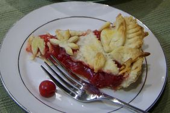

Cherry Pie

Tasty Cherry Pie
I mean, it's cherry pie. Who doesn't like cherry pie?
Ingredients
- 1 recipe pastry for a 9 inch double crust pie
- 1 (20 ounce) can pitted sour cherries
- 1 cup white sugar
- 1/2 cup all-purpose flour
- 1/8 teaspoon salt
- 2 tablespoons butter
- 1/4 teaspoon almond extract
- 1/4 teaspoon red food coloring (Optional)
- 1 egg yolk
Instructions
- Preheat oven to 425 degrees F (220 C). Make pastry and refrigerate.
- Drain cherries, reserving 1 cup liquid. In a saucepan combine sugar, flour and salt. Stir in cherry liquid and bring to a boil, stirring often. Reduce heat and simmer for 5 minutes. Mixture will thicken.
- When mixture is thickened, add butter, almond extract, food coloring and cherries. Cover and refrigerate.
- On lightly covered surface, roll out half of the pastry into an 11 inch circle. Put into 9 inch pie dish. Roll other half of pastry into another 11 inch circle. With a knife or pastry wheel, cut eight 1/2 inch strips.
- Pour cooled cherry filling into pie dish. Place pastry strips horizontally, then vertically, across the top of the pie and lightly brush with egg yolk. Bake 30 to 35 minutes, and cool before serving.
- Enjoy!
Home